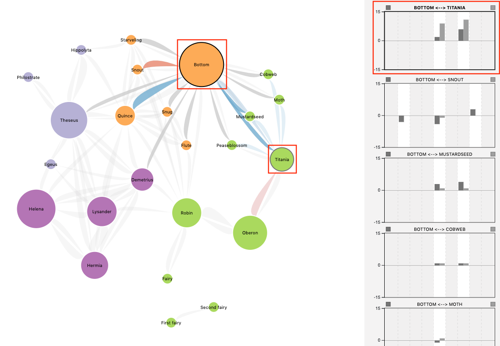

<div class="jumbotron">
    <div class="container" id="intro">
        <!--  -->
        <h1 class="title ">ShakesPeer</h1> <br/>
        <h4 class="subheading">Collaborators</h4>
        <p>Kevin Chow<br/>
        Mint Tanprasert</p>
        <h4 class="subheading">Summary</h4>
        <p>
        We designed <i>ShakesPeer</i>, an interactive tool that visualizes interactions between characters in Shakespeare’s plays. 
        By translating play dialogue into simple bar charts and graphs, users can get a quick, high-level overview of the play's social organization, as well as identify characters' friends and enemies at different points in the story. 
    </p>
    <br/> 
    <p><a href="https://www.cs.ubc.ca/~tmm/courses/547-19/projects.html">Click here to see the full report for this project!</a></p>
    <h4></h4>
    </div>
    </div>